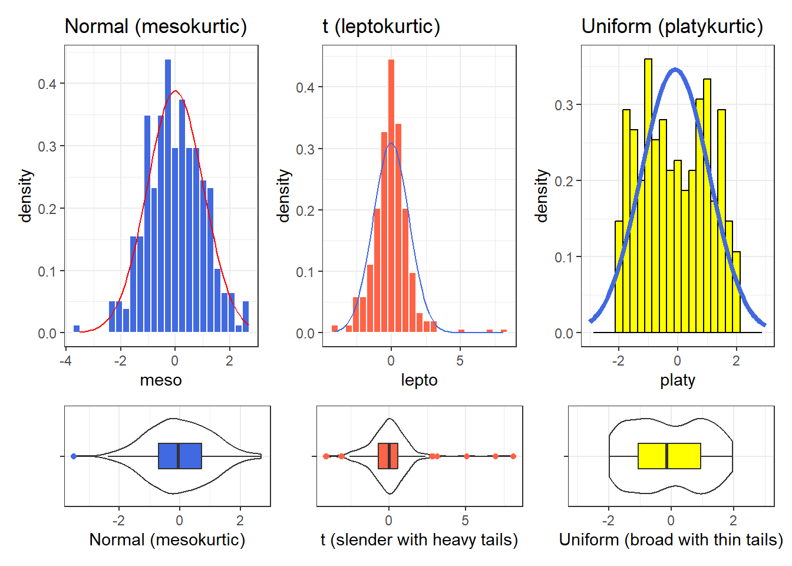

knitr::opts_chunk$set(comment = NA)
library(gtsummary)
library(kableExtra)
library(patchwork)
library(summarytools)
library(tidyverse)
theme_set(theme_bw())7 Summarizing Quantities
Most numerical summaries that might be new to you are applied most appropriately to quantitative variables. The measures that will interest us relate to:
- the center of our distribution,
- the spread of our distribution, and
- the shape of our distribution.
7.1 Setup: Packages Used Here
This chapter also requires that the Hmisc, mosaic, and psych packages are loaded on your machine, but these packages are not loaded with library() above.
7.2 Working with the nh_750 data
To demonstrate key ideas in this Chapter, we will consider our sample of 750 adults ages 21-64 from NHANES 2011-12 which includes some missing values. We’ll load into the nh_750 data frame the information from the nh_adult750.Rds file we created in Section 4.3.2.
nh_750 <- read_rds("data/nh_adult750.Rds")7.3 The summary function for Quantitative data
R provides a small sampling of numerical summaries with the summary function, for instance.
nh_750 |>
select(Age, BMI, SBP, DBP, Pulse) |>
summary() Age BMI SBP DBP
Min. :21.00 Min. :16.70 Min. : 83.0 Min. : 0.00
1st Qu.:30.00 1st Qu.:24.20 1st Qu.:108.0 1st Qu.: 66.00
Median :40.00 Median :27.90 Median :118.0 Median : 73.00
Mean :40.82 Mean :29.08 Mean :118.8 Mean : 72.69
3rd Qu.:51.00 3rd Qu.:32.10 3rd Qu.:127.0 3rd Qu.: 80.00
Max. :64.00 Max. :80.60 Max. :209.0 Max. :108.00
NA's :5 NA's :33 NA's :33
Pulse
Min. : 40.00
1st Qu.: 66.00
Median : 72.00
Mean : 73.53
3rd Qu.: 80.00
Max. :124.00
NA's :32 This basic summary includes a set of five quantiles1, plus the sample’s mean.
Min.= the minimum value for each variable, so, for example, the youngest subject’s Age was 21.1st Qu.= the first quartile (25th percentile) for each variable - for example, 25% of the subjects were Age 30 or younger.Median= the median (50th percentile) - half of the subjects were Age 40 or younger.Mean= the mean, usually what one means by an average - the sum of the Ages divided by 750 is 40.8,3rd Qu.= the third quartile (75th percentile) - 25% of the subjects were Age 51 or older.Max.= the maximum value for each variable, so the oldest subject was Age 64.
The summary also specifies the number of missing values for each variable. Here, we are missing 5 of the BMI values, for example.
7.4 Measuring the Center of a Distribution
7.4.1 The Mean and The Median
The mean and median are the most commonly used measures of the center of a distribution for a quantitative variable. The median is the more generally useful value, as it is relevant even if the data have a shape that is not symmetric. We might also collect the sum of the observations, and the count of the number of observations, usually symbolized with n.
For variables without missing values, like Age, this is pretty straightforward.
nh_750 |>
summarise(n = n(), Mean = mean(Age), Median = median(Age), Sum = sum(Age))# A tibble: 1 × 4
n Mean Median Sum
<int> <dbl> <dbl> <int>
1 750 40.8 40 30616And again, the Mean is just the Sum (30616), divided by the number of non-missing values of Age (750), or 40.8213333.
The Median is the middle value when the data are sorted in order. When we have an odd number of values, this is sufficient. When we have an even number, as in this case, we take the mean of the two middle values. We could sort and list all 500 Ages, if we wanted to do so.
nh_750 |> select(Age) |>
arrange(Age)# A tibble: 750 × 1
Age
<int>
1 21
2 21
3 21
4 21
5 21
6 21
7 21
8 21
9 21
10 21
# … with 740 more rowsBut this data set figures we don’t want to output more than 10 observations to a table like this.
If we really want to see all of the data, we can use View(nh_750) to get a spreadsheet-style presentation, or use the sort command…
sort(nh_750$Age) [1] 21 21 21 21 21 21 21 21 21 21 21 21 21 21 21 21 21 21 21 21 21 21 22 22 22
[26] 22 22 22 22 22 22 22 22 22 22 22 22 22 22 22 22 22 22 22 23 23 23 23 23 23
[51] 23 23 23 23 23 23 23 23 23 23 23 23 23 23 23 23 24 24 24 24 24 24 24 24 24
[76] 24 24 24 24 24 24 24 24 24 24 24 24 24 24 25 25 25 25 25 25 25 25 25 25 25
[101] 25 25 25 26 26 26 26 26 26 26 26 26 26 26 26 26 26 27 27 27 27 27 27 27 27
[126] 27 27 27 27 27 28 28 28 28 28 28 28 28 28 28 28 28 28 28 28 28 28 28 28 28
[151] 29 29 29 29 29 29 29 29 29 29 29 29 29 29 29 29 29 29 29 29 30 30 30 30 30
[176] 30 30 30 30 30 30 30 30 30 30 30 30 30 30 30 30 30 30 30 31 31 31 31 31 31
[201] 31 31 31 31 31 31 31 31 31 31 31 31 31 32 32 32 32 32 32 32 32 32 32 32 32
[226] 32 32 32 32 32 32 32 32 32 32 32 32 32 32 32 32 33 33 33 33 33 33 33 33 33
[251] 33 33 33 33 33 33 33 33 33 33 33 33 33 33 33 34 34 34 34 34 34 34 34 34 34
[276] 34 34 34 34 35 35 35 35 35 35 35 35 35 35 35 36 36 36 36 36 36 36 36 36 36
[301] 36 36 36 36 36 36 36 36 36 36 36 36 36 36 36 36 37 37 37 37 37 37 37 37 37
[326] 37 37 37 37 37 37 37 37 37 38 38 38 38 38 38 38 38 38 38 38 38 38 38 38 38
[351] 39 39 39 39 39 39 39 39 39 39 39 39 39 39 39 39 39 39 39 40 40 40 40 40 40
[376] 40 40 40 40 40 40 40 40 40 40 40 40 41 41 41 41 41 41 41 41 41 41 41 41 41
[401] 42 42 42 42 42 42 42 42 42 42 42 42 42 42 42 42 42 42 42 43 43 43 43 43 43
[426] 43 43 43 43 43 43 43 43 43 43 43 43 44 44 44 44 44 44 44 44 44 44 44 44 44
[451] 44 44 44 45 45 45 45 45 45 45 45 45 45 45 45 45 45 45 45 45 46 46 46 46 46
[476] 46 46 46 46 46 46 46 46 46 47 47 47 47 47 47 47 47 47 47 47 47 47 47 47 47
[501] 47 48 48 48 48 48 48 48 48 48 48 48 49 49 49 49 49 49 49 49 49 49 49 49 49
[526] 50 50 50 50 50 50 50 50 50 50 50 50 50 50 50 50 50 50 50 50 50 50 50 50 50
[551] 50 51 51 51 51 51 51 51 51 51 51 51 51 51 51 51 51 51 51 51 51 52 52 52 52
[576] 52 52 52 52 52 52 52 52 53 53 53 53 53 53 53 53 53 53 53 53 53 53 53 54 54
[601] 54 54 54 54 54 54 54 54 54 54 54 54 54 54 55 55 55 55 55 55 55 55 55 55 56
[626] 56 56 56 56 56 56 56 56 56 56 56 56 56 56 56 56 56 56 57 57 57 57 57 57 57
[651] 57 57 58 58 58 58 58 58 58 58 58 58 58 58 58 58 58 58 58 58 59 59 59 59 59
[676] 59 59 59 59 59 59 59 59 60 60 60 60 60 60 60 60 60 60 60 60 60 61 61 61 61
[701] 61 61 61 61 61 61 61 61 61 61 62 62 62 62 62 62 62 62 62 62 62 62 62 63 63
[726] 63 63 63 63 63 63 63 63 63 63 63 64 64 64 64 64 64 64 64 64 64 64 64 64 64Again, to find the median, we would take the mean of the middle two observations in this sorted data set. That would be the 250th and 251st largest Ages.
sort(nh_750$Age)[250:251][1] 33 337.4.2 Dealing with Missingness
When calculating a mean, you may be tempted to try something like this…
nh_750 |>
summarise(mean(Pulse), median(Pulse))# A tibble: 1 × 2
`mean(Pulse)` `median(Pulse)`
<dbl> <int>
1 NA NAThis fails because we have some missing values in the Pulse data. We can address this by either omitting the data with missing values before we run the summarise() function, or tell the mean and median summary functions to remove missing values2.
nh_750 |>
filter(complete.cases(Pulse)) |>
summarise(count = n(), mean(Pulse), median(Pulse))# A tibble: 1 × 3
count `mean(Pulse)` `median(Pulse)`
<int> <dbl> <dbl>
1 718 73.5 72Or, we could tell the summary functions themselves to remove NA values.
nh_750 |>
summarise(mean(Pulse, na.rm=TRUE), median(Pulse, na.rm=TRUE))# A tibble: 1 × 2
`mean(Pulse, na.rm = TRUE)` `median(Pulse, na.rm = TRUE)`
<dbl> <dbl>
1 73.5 72In Chapter 9, we will discuss various assumptions we can make about missing data, and the importance of imputation when dealing with it in modeling or making inferences. For now, we will limit our descriptive summaries to observed values, in what are called complete case or available case analyses.
7.4.3 The Mode of a Quantitative Variable
One other less common measure of the center of a quantitative variable’s distribution is its most frequently observed value, referred to as the mode. This measure is only appropriate for discrete variables, be they quantitative or categorical. To find the mode, we usually tabulate the data, and then sort by the counts of the numbers of observations.
nh_750 |>
group_by(Age) |>
summarise(count = n()) |>
arrange(desc(count)) # A tibble: 44 × 2
Age count
<int> <int>
1 32 28
2 36 26
3 50 26
4 30 24
5 33 24
6 24 23
7 21 22
8 22 22
9 23 22
10 28 20
# … with 34 more rowsThe mode is just the most common Age observed in the data.
Note the use of three different “verbs” in our function there - for more explanation of this strategy, visit Wickham and Grolemund (2022). The group_by function here is very useful. It converts the nh_750 data frame into a new grouped tibble where operations are performed on the groups. Here, this means that it groups the data by Age before counting observations, and then sorting the groups (the Ages) by their frequencies.
As an alternative, the modeest package’s mlv function calculates the sample mode (or most frequent value) 3.
7.5 Measuring the Spread of a Distribution
Statistics is all about variation, so spread or dispersion is an important fundamental concept in statistics. Measures of spread like the inter-quartile range and range (maximum - minimum) can help us understand and compare data sets. If the values in the data are close to the center, the spread will be small. If many of the values in the data are scattered far away from the center, the spread will be large.
7.5.1 The Range and the Interquartile Range (IQR)
The range of a quantitative variable is sometimes interpreted as the difference between the maximum and the minimum, even though R presents the actual minimum and maximum values when you ask for a range…
nh_750 |>
select(Age) |>
range()[1] 21 64And, for a variable with missing values, we can use…
nh_750 |>
select(BMI) |>
filter(complete.cases(BMI)) |>
range()[1] 16.7 80.6A more interesting and useful statistic is the inter-quartile range, or IQR, which is the range of the middle half of the distribution, calculated by subtracting the 25th percentile value from the 75th percentile value.
nh_750 |>
summarise(IQR(Age), quantile(Age, 0.25), quantile(Age, 0.75))# A tibble: 1 × 3
`IQR(Age)` `quantile(Age, 0.25)` `quantile(Age, 0.75)`
<dbl> <dbl> <dbl>
1 21 30 51We can calculate the range and IQR nicely from the summary information on quantiles, of course:
nh_750 |>
select(Age, BMI, SBP, DBP, Pulse) |>
summary() Age BMI SBP DBP
Min. :21.00 Min. :16.70 Min. : 83.0 Min. : 0.00
1st Qu.:30.00 1st Qu.:24.20 1st Qu.:108.0 1st Qu.: 66.00
Median :40.00 Median :27.90 Median :118.0 Median : 73.00
Mean :40.82 Mean :29.08 Mean :118.8 Mean : 72.69
3rd Qu.:51.00 3rd Qu.:32.10 3rd Qu.:127.0 3rd Qu.: 80.00
Max. :64.00 Max. :80.60 Max. :209.0 Max. :108.00
NA's :5 NA's :33 NA's :33
Pulse
Min. : 40.00
1st Qu.: 66.00
Median : 72.00
Mean : 73.53
3rd Qu.: 80.00
Max. :124.00
NA's :32 7.5.2 The Variance and the Standard Deviation
The IQR is always a reasonable summary of spread, just as the median is always a reasonable summary of the center of a distribution. Yet, most people are inclined to summarize a batch of data using two numbers: the mean and the standard deviation. This is really only a sensible thing to do if you are willing to assume the data follow a Normal distribution: a bell-shaped, symmetric distribution without substantial outliers.
But most data do not (even approximately) follow a Normal distribution. Summarizing by the median and quartiles (25th and 75th percentiles) is much more robust, explaining R’s emphasis on them.
7.5.3 Obtaining the Variance and Standard Deviation in R
Here are the variances of the quantitative variables in the nh_750 data. Note the need to include na.rm = TRUE to deal with the missing values in some variables.
nh_750 |>
select(Age, BMI, SBP, DBP, Pulse) |>
summarise_all(var, na.rm = TRUE)# A tibble: 1 × 5
Age BMI SBP DBP Pulse
<dbl> <dbl> <dbl> <dbl> <dbl>
1 157. 52.4 229. 128. 136.And here are the standard deviations of those same variables.
nh_750 |>
select(Age, BMI, SBP, DBP, Pulse) |>
summarise_all(sd, na.rm = TRUE)# A tibble: 1 × 5
Age BMI SBP DBP Pulse
<dbl> <dbl> <dbl> <dbl> <dbl>
1 12.5 7.24 15.1 11.3 11.67.5.4 Defining the Variance and Standard Deviation
Bock, Velleman, and De Veaux (2004) have lots of useful thoughts here, which are lightly edited here.
In thinking about spread, we might consider how far each data value is from the mean. Such a difference is called a deviation. We could just average the deviations, but the positive and negative differences always cancel out, leaving an average deviation of zero, so that’s not helpful. Instead, we square each deviation to obtain non-negative values, and to emphasize larger differences. When we add up these squared deviations and find their mean (almost), this yields the variance.
\[ \mbox{Variance} = s^2 = \frac{\Sigma (y - \bar{y})^2}{n-1} \]
Why almost? It would be the mean of the squared deviations only if we divided the sum by \(n\), but instead we divide by \(n-1\) because doing so produces an estimate of the true (population) variance that is unbiased4. If you’re looking for a more intuitive explanation, this Stack Exchange link awaits your attention.
- To return to the original units of measurement, we take the square root of \(s^2\), and instead work with \(s\), the standard deviation, also abbreviated SD.
\[ \mbox{Standard Deviation} = s = \sqrt{\frac{\Sigma (y - \bar{y})^2}{n-1}} \]
7.5.5 Interpreting the SD when the data are Normally distributed
For a set of measurements that follow a Normal distribution, the interval:
- Mean \(\pm\) Standard Deviation contains approximately 68% of the measurements;
- Mean \(\pm\) 2(Standard Deviation) contains approximately 95% of the measurements;
- Mean \(\pm\) 3(Standard Deviation) contains approximately all (99.7%) of the measurements.
We often refer to the population or process mean of a distribution with \(\mu\) and the standard deviation with \(\sigma\), leading to the Figure below.

But if the data are not from an approximately Normal distribution, then this Empirical Rule is less helpful.
7.5.6 Chebyshev’s Inequality: One Interpretation of the Standard Deviation
Chebyshev’s Inequality tells us that for any distribution, regardless of its relationship to a Normal distribution, no more than 1/k2 of the distribution’s values can lie more than k standard deviations from the mean. This implies, for instance, that for any distribution, at least 75% of the values must lie within two standard deviations of the mean, and at least 89% must lie within three standard deviations of the mean.
Again, most data sets do not follow a Normal distribution. We’ll return to this notion soon. But first, let’s try to draw some pictures that let us get a better understanding of the distribution of our data.
7.6 Measuring the Shape of a Distribution
When considering the shape of a distribution, one is often interested in three key points.
- The number of modes in the distribution, which I always assess through plotting the data.
- The skewness, or symmetry that is present, which I typically assess by looking at a plot of the distribution of the data, but if required to, will summarize with a non-parametric measure of skewness, that we will discuss in Section 10.13.
- The kurtosis, or heavy-tailedness (outlier-proneness) that is present, usually in comparison to a Normal distribution. Again, this is something I nearly inevitably assess graphically, but there are measures.
A Normal distribution has a single mode, is symmetric and, naturally, is neither heavy-tailed nor light-tailed as compared to a Normal distribution (we call this mesokurtic).
7.6.1 Multimodal vs. Unimodal distributions
A unimodal distribution, on some level, is straightforward. It is a distribution with a single mode, or “peak” in the distribution. Such a distribution may be skewed or symmetric, light-tailed or heavy-tailed. We usually describe as multimodal distributions like the two on the right below, which have multiple local maxima, even though they have just a single global maximum peak.

Truly multimodal distributions are usually described that way in terms of shape. For unimodal distributions, skewness and kurtosis become useful ideas.
7.6.2 Skew
Whether or not a distribution is approximately symmetric is an important consideration in describing its shape. Graphical assessments are always most useful in this setting, particularly for unimodal data. My favorite measure of skew, or skewness if the data have a single mode, is:
\[ skew_1 = \frac{\mbox{mean} - \mbox{median}}{\mbox{standard deviation}} \]
- Symmetric distributions generally show values of \(skew_1\) near zero. If the distribution is actually symmetric, the mean should be equal to the median.
- Distributions with \(skew_1\) values above 0.2 in absolute value generally indicate meaningful skew.
- Positive skew (mean > median if the data are unimodal) is also referred to as right skew.
- Negative skew (mean < median if the data are unimodal) is referred to as left skew.

7.6.3 Kurtosis
When we have a unimodal distribution that is symmetric, we will often be interested in the behavior of the tails of the distribution, as compared to a Normal distribution with the same mean and standard deviation. High values of kurtosis measures (and there are several) indicate data which has extreme outliers, or is heavy-tailed.
- A mesokurtic distribution has similar tail behavior to what we would expect from a Normal distribution.
- A leptokurtic distribution is a thinner, more slender distribution, with heavier tails than we’d expect from a Normal distribution. One example is the t distribution.
- A platykurtic distribution is a broader, flatter distribution, with thinner tails than we’d expect from a Normal distribution. One example is a uniform distribution.
The visualization below (shown after the code) displays these three types of distributions.
set.seed(431)
sims_kurt <- tibble(meso = rnorm(n = 300, mean = 0, sd = 1),
lepto = rt(n = 300, df = 4),
platy = runif(n = 300, min = -2, max = 2))
p1 <- ggplot(sims_kurt, aes(x = meso)) +
geom_histogram(aes(y = stat(density)),
bins = 25, fill = "royalblue", col = "white") +
stat_function(fun = dnorm,
args = list(mean = mean(sims_kurt$meso),
sd = sd(sims_kurt$meso)),
col = "red") +
labs(title = "Normal (mesokurtic)")
p1a <- ggplot(sims_kurt, aes(x = meso, y = "")) +
geom_violin() +
geom_boxplot(fill = "royalblue", outlier.color = "royalblue", width = 0.3) +
labs(y = "", x = "Normal (mesokurtic)")
p2 <- ggplot(sims_kurt, aes(x = lepto)) +
geom_histogram(aes(y = stat(density)),
bins = 25, fill = "tomato", col = "white") +
stat_function(fun = dnorm,
args = list(mean = mean(sims_kurt$lepto),
sd = sd(sims_kurt$lepto)),
col = "royalblue") +
labs(title = "t (leptokurtic)")
p2a <- ggplot(sims_kurt, aes(x = lepto, y = "")) +
geom_violin() +
geom_boxplot(fill = "tomato", outlier.color = "tomato", width = 0.3) +
labs(y = "", x = "t (slender with heavy tails)")
p3 <- ggplot(sims_kurt, aes(x = platy)) +
geom_histogram(aes(y = stat(density)),
bins = 25, fill = "yellow", col = "black") +
stat_function(fun = dnorm,
args = list(mean = mean(sims_kurt$platy),
sd = sd(sims_kurt$platy)),
col = "royalblue", lwd = 1.5) +
xlim(-3, 3) +
labs(title = "Uniform (platykurtic)")
p3a <- ggplot(sims_kurt, aes(x = platy, y = "")) +
geom_violin() +
geom_boxplot(fill = "yellow", width = 0.3) +
xlim(-3, 3) +
labs(y = "", x = "Uniform (broad with thin tails)")
(p1 + p2 + p3) / (p1a + p2a + p3a) +
plot_layout(heights = c(3, 1))
Graphical tools are in most cases the best way to identify issues related to kurtosis, and we usually only focus on kurtosis if we are willing to assume symmetry (or at least lack of meaningful skew) in our data.
7.7 Multiple Summaries at once
7.7.1 favstats() from the mosaic package
The favstats function adds the standard deviation, and counts of overall and missing observations to our usual summary for a continuous variable. Let’s look at systolic blood pressure, because we haven’t yet.
mosaic::favstats(~ SBP, data = nh_750) min Q1 median Q3 max mean sd n missing
83 108 118 127 209 118.7908 15.14329 717 33We could, of course, duplicate these results with several summarise() pieces…
nh_750 |>
filter(complete.cases(SBP)) |>
summarise(min = min(SBP), Q1 = quantile(SBP, 0.25),
median = median(SBP), Q3 = quantile(SBP, 0.75),
max = max(SBP), mean = mean(SBP),
sd = sd(SBP), n = n(), miss = sum(is.na(SBP))) |>
kbl(digits = 2)| min | Q1 | median | Q3 | max | mean | sd | n | miss |
|---|---|---|---|---|---|---|---|---|
| 83 | 108 | 118 | 127 | 209 | 118.79 | 15.14 | 717 | 0 |
The somewhat unusual structure of favstats (complete with an easy to forget ~) is actually helpful. It allows you to look at some interesting grouping approaches, like this:
mosaic::favstats(SBP ~ Education, data = nh_750) Education min Q1 median Q3 max mean sd n missing
1 8th Grade 96 110.25 119.5 129.75 167 122.4565 16.34993 46 4
2 9 - 11th Grade 85 107.75 116.0 127.00 191 118.8026 15.79453 76 0
3 High School 84 111.50 120.5 129.00 209 121.0882 16.52853 136 7
4 Some College 85 108.00 117.0 126.00 186 118.6293 14.32736 232 9
5 College Grad 83 107.00 117.0 125.00 171 116.8326 14.41202 227 13Of course, we could accomplish the same comparison with dplyr commands, too, but the favstats approach has much to offer.
nh_750 |>
filter(complete.cases(SBP, Education)) |>
group_by(Education) |>
summarise(min = min(SBP), Q1 = quantile(SBP, 0.25),
median = median(SBP), Q3 = quantile(SBP, 0.75),
max = max(SBP), mean = mean(SBP),
sd = sd(SBP), n = n(), miss = sum(is.na(SBP))) |>
kbl(digits = 2)| Education | min | Q1 | median | Q3 | max | mean | sd | n | miss |
|---|---|---|---|---|---|---|---|---|---|
| 8th Grade | 96 | 110.25 | 119.5 | 129.75 | 167 | 122.46 | 16.35 | 46 | 0 |
| 9 - 11th Grade | 85 | 107.75 | 116.0 | 127.00 | 191 | 118.80 | 15.79 | 76 | 0 |
| High School | 84 | 111.50 | 120.5 | 129.00 | 209 | 121.09 | 16.53 | 136 | 0 |
| Some College | 85 | 108.00 | 117.0 | 126.00 | 186 | 118.63 | 14.33 | 232 | 0 |
| College Grad | 83 | 107.00 | 117.0 | 125.00 | 171 | 116.83 | 14.41 | 227 | 0 |
7.7.2 Using descr() from summarytools
The descr() function from the summarytools package produces numerous numerical summaries for quantities.
nh_750 |>
select(Age, BMI, SBP, DBP, Pulse) |>
descr() |>
kbl(digits = 2) |>
kable_styling(full_width = F)| Age | BMI | DBP | Pulse | SBP | |
|---|---|---|---|---|---|
| Mean | 40.82 | 29.08 | 72.69 | 73.53 | 118.79 |
| Std.Dev | 12.54 | 7.24 | 11.34 | 11.65 | 15.14 |
| Min | 21.00 | 16.70 | 0.00 | 40.00 | 83.00 |
| Q1 | 30.00 | 24.20 | 66.00 | 66.00 | 108.00 |
| Median | 40.00 | 27.90 | 73.00 | 72.00 | 118.00 |
| Q3 | 51.00 | 32.10 | 80.00 | 80.00 | 127.00 |
| Max | 64.00 | 80.60 | 108.00 | 124.00 | 209.00 |
| MAD | 14.83 | 5.93 | 10.38 | 11.86 | 13.34 |
| IQR | 21.00 | 7.90 | 14.00 | 14.00 | 19.00 |
| CV | 0.31 | 0.25 | 0.16 | 0.16 | 0.13 |
| Skewness | 0.16 | 1.72 | -0.28 | 0.48 | 0.96 |
| SE.Skewness | 0.09 | 0.09 | 0.09 | 0.09 | 0.09 |
| Kurtosis | -1.15 | 6.16 | 2.59 | 0.73 | 3.10 |
| N.Valid | 750.00 | 745.00 | 717.00 | 718.00 | 717.00 |
| Pct.Valid | 100.00 | 99.33 | 95.60 | 95.73 | 95.60 |
The additional statistics presented here are:
MAD= the median absolute deviation (from the median), which can be used in a manner similar to the standard deviation or IQR to measure spread.- If the data are \(Y_1, Y_2, ..., Y_n\), then the
MADis defined as \(median(|Y_i - median(Y_i)|)\). - To find the
MADfor a set of numbers, find the median, subtract the median from each value and find the absolute value of that difference, and then find the median of those absolute differences. - For non-normal data with a skewed shape but tails well approximated by the Normal, the
MADis likely to be a better (more robust) estimate of the spread than is the standard deviation.
- If the data are \(Y_1, Y_2, ..., Y_n\), then the
CV= the coefficient of variation, or the standard deviation divided by the mean- a measure of
Skewnessand its standard error. This Skewness measure refers to how much asymmetry is present in the shape of the distribution. The measure is not the same as the nonparametric skew measure that we will usually prefer and that we discuss further in Section 10.13. - Our nonparametric skew measure is just the difference between the mean and the median, divided by the standard deviation.
- The Wikipedia page on skewness is very detailed.
- a measure of
Kurtosis, which refers to how outlier-prone, or heavy-tailed the shape of the distribution is, as compared to a Normal distribution. - the number of valid (non-missing) observations in each variable.
Recall that in Chapter 3, we saw the use of an adjustment to show only “common” summaries. We can pick and choose from the entire list of available summaries. See the summarytools package vignette for more details.
nh_750 |>
select(Age, BMI, SBP, DBP, Pulse) |>
descr(stats = "common") |>
kbl(digits = 2) |>
kable_styling(full_width = F)| Age | BMI | DBP | Pulse | SBP | |
|---|---|---|---|---|---|
| Mean | 40.82 | 29.08 | 72.69 | 73.53 | 118.79 |
| Std.Dev | 12.54 | 7.24 | 11.34 | 11.65 | 15.14 |
| Min | 21.00 | 16.70 | 0.00 | 40.00 | 83.00 |
| Median | 40.00 | 27.90 | 73.00 | 72.00 | 118.00 |
| Max | 64.00 | 80.60 | 108.00 | 124.00 | 209.00 |
| N.Valid | 750.00 | 745.00 | 717.00 | 718.00 | 717.00 |
| Pct.Valid | 100.00 | 99.33 | 95.60 | 95.73 | 95.60 |
7.7.3 describe in the psych package
The psych package has an even more detailed list of numerical summaries for quantitative variables that lets us look at a group of observations at once.
psych::describe(nh_750 |> select(Age, BMI, SBP, DBP, Pulse)) vars n mean sd median trimmed mad min max range skew
Age 1 750 40.82 12.54 40.0 40.53 14.83 21.0 64.0 43.0 0.16
BMI 2 745 29.08 7.24 27.9 28.31 5.93 16.7 80.6 63.9 1.72
SBP 3 717 118.79 15.14 118.0 117.88 13.34 83.0 209.0 126.0 0.96
DBP 4 717 72.69 11.34 73.0 72.65 10.38 0.0 108.0 108.0 -0.28
Pulse 5 718 73.53 11.65 72.0 73.11 11.86 40.0 124.0 84.0 0.48
kurtosis se
Age -1.15 0.46
BMI 6.16 0.27
SBP 3.10 0.57
DBP 2.59 0.42
Pulse 0.73 0.43The additional statistics presented here, beyond those discussed previously, are:
trimmed= a trimmed mean (by default in this function, this removes the top and bottom 10% from the data, then computes the mean of the remaining values - the middle 80% of the full data set.)se= the standard error of the sample mean, equal to the sample sd divided by the square root of the sample size.
7.7.4 The Hmisc package’s version of describe
Hmisc::describe(nh_750 |>
select(Age, BMI, SBP, DBP, Pulse))select(nh_750, Age, BMI, SBP, DBP, Pulse)
5 Variables 750 Observations
--------------------------------------------------------------------------------
Age
n missing distinct Info Mean Gmd .05 .10
750 0 44 0.999 40.82 14.46 22 24
.25 .50 .75 .90 .95
30 40 51 59 62
lowest : 21 22 23 24 25, highest: 60 61 62 63 64
--------------------------------------------------------------------------------
BMI
n missing distinct Info Mean Gmd .05 .10
745 5 250 1 29.08 7.538 20.22 21.30
.25 .50 .75 .90 .95
24.20 27.90 32.10 37.60 41.28
lowest : 16.7 17.6 17.8 17.9 18.0, highest: 59.1 62.8 63.3 69.0 80.6
--------------------------------------------------------------------------------
SBP
n missing distinct Info Mean Gmd .05 .10
717 33 81 0.999 118.8 16.36 98.0 102.0
.25 .50 .75 .90 .95
108.0 118.0 127.0 137.0 144.2
lowest : 83 84 85 86 89, highest: 171 179 186 191 209
--------------------------------------------------------------------------------
DBP
n missing distinct Info Mean Gmd .05 .10
717 33 66 0.999 72.69 12.43 55 59
.25 .50 .75 .90 .95
66 73 80 86 91
lowest : 0 25 41 42 44, highest: 104 105 106 107 108
--------------------------------------------------------------------------------
Pulse
n missing distinct Info Mean Gmd .05 .10
718 32 37 0.997 73.53 12.95 56 60
.25 .50 .75 .90 .95
66 72 80 88 94
lowest : 40 44 46 48 50, highest: 108 112 114 118 124
--------------------------------------------------------------------------------The Hmisc package’s version of describe for a distribution of data presents three new ideas, in addition to a more comprehensive list of quartiles (the 5th, 10th, 25th, 50th, 75th, 90th and 95th are shown) and the lowest and highest few observations. These are:
distinct- the number of different values observed in the data.Info- a measure of how “continuous” the variable is, related to how many “ties” there are in the data, with Info taking a higher value (closer to its maximum of one) if the data are more continuous.Gmd- the Gini mean difference - a robust measure of spread that is calculated as the mean absolute difference between any pairs of observations. Larger values of Gmd indicate more spread-out distributions. (Gini is usually pronounced as “Genie”.)
7.7.5 Using tbl_summary() from gtsummary
If you want to produce results which look like you might expect to see in a published paper, the tbl_summary() function from the gtsummary package has many nice features. Here, we’ll just show the medians, and 25th and 75th percentiles. Recall that we looked at some other options for this tool back in Chapter 3.
nh_750 |>
select(Age, BMI, SBP, DBP, Pulse) |>
tbl_summary()| Characteristic | N = 7501 |
|---|---|
| Age | 40 (30, 51) |
| BMI | 28 (24, 32) |
| Unknown | 5 |
| SBP | 118 (108, 127) |
| Unknown | 33 |
| DBP | 73 (66, 80) |
| Unknown | 33 |
| Pulse | 72 (66, 80) |
| Unknown | 32 |
| 1 Median (IQR) | |
7.7.6 Some Other Options
You’ll recall that in our discussion of the Palmer Penguins, back in Chapter 3, we used several other strategies to develop graphical and numerical summaries of quantities, and all of those approaches could be used here, too.
- The
DataExplorerpackage can be used for more automated exploratory data analyses. - Some people also like
skimrwhich has some similar goals.
Next, we’ll focus on a few tools for summarizing categorical information.
The quantiles (sometimes referred to as percentiles) can also be summarized with a boxplot.↩︎
We could also use
!is.nain place ofcomplete.casesto accomplish the same thing.↩︎See the documentation for the
modeestpackage’smlvfunction to look at other definitions of the mode.↩︎When we divide by n-1 as we calculate the sample variance, the average of the sample variances for all possible samples is equal to the population variance. If we instead divided by n, the average sample variance across all possible samples would be a little smaller than the population variance.↩︎